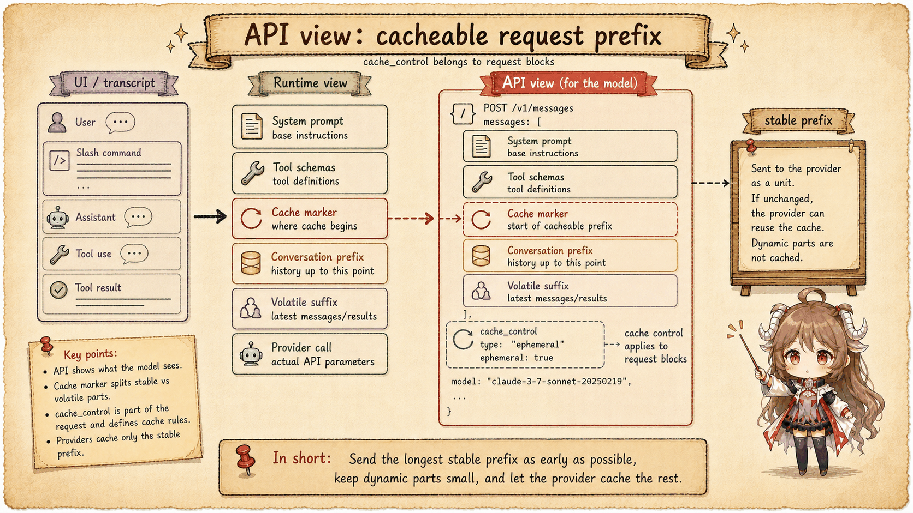
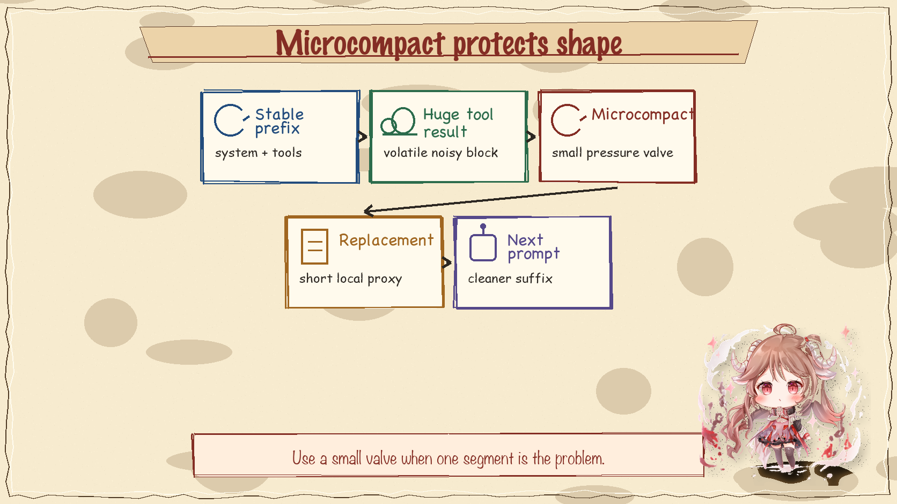
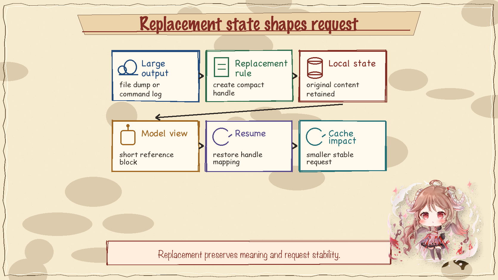
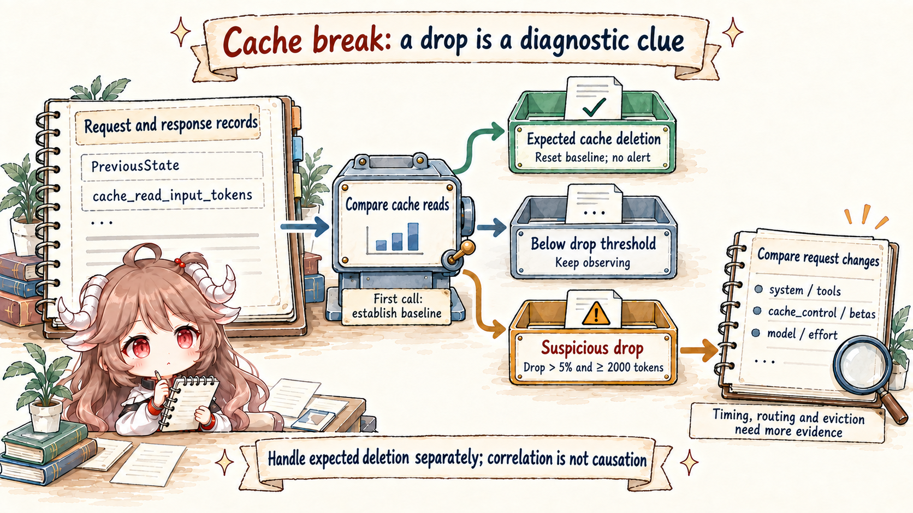

Prompt caching works best when the early part of the request stays byte-stable across calls. A coding agent naturally fights that requirement: tool results change, files change, memory changes, and child tasks need different instructions. Claude Code performance code is therefore mostly about preserving shape.
1. The API sees cache markers on request blocks
At the provider boundary, Claude Code converts runtime messages and tools into Anthropic request parameters. Cache control can be attached to selected blocks so the provider can reuse stable prompt prefixes. The important part is placement. A cache marker after a volatile block is much less valuable.

2. Forking tries to keep the parent prefix stable
The fork path described in the subagent article has a cache consequence. If the child request can reuse the parent system prompt, tools, and selected message prefix, it can add task-specific instructions near the suffix while keeping the expensive front stable.

3. Microcompact reduces volatile pressure
Large or frequently changing blocks can break cache usefulness even when the nominal cache setting is enabled. Microcompact gives the runtime a smaller pressure valve: reduce a troublesome segment without forcing a full compact of the whole conversation.

4. Replacement state has to be request-aware
Content replacement helps keep long tool outputs and file-related state manageable. But replacement also changes what the provider sees. The runtime must know whether replacement preserves the facts needed by the next turn and whether it changes cache-sensitive request layout.

5. Cache-break detection makes performance visible
Without explicit detection, cache misses look like the model simply got slower. Claude Code tracks cache-sensitive changes so developers can distinguish unavoidable new work from accidental prefix churn. That turns performance from folklore into a debuggable runtime property.

6. The invariant
Performance follows request shape. Stable prefixes, careful fork suffixes, bounded tool results, microcompact, and replacement state are all different ways to protect that shape. Treating prompt cache as a boolean setting misses the engineering problem.
Sources
The source-code claims in this article are based on the public mirror and the linked official documentation. Server-side behavior and private feature-gate policy are treated only as client-visible request shape.